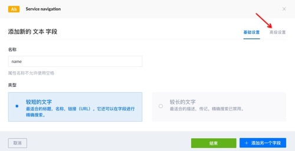
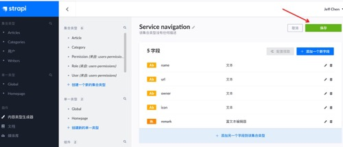
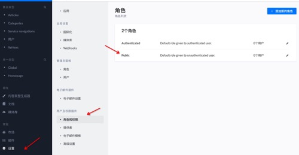
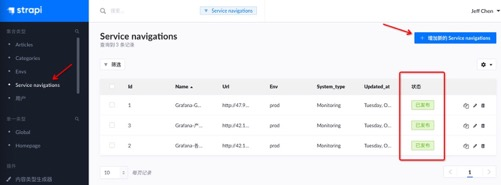

无头CMS - Strapi
安装
- mysql参考，提前新建
strapi库
基于docke-compose
- TODO 第二次安装失败，启动报js错，待fix
version: '3'
services:
strapi:
image: strapi/strapi:3.6.8-node14
environment:
DATABASE_CLIENT: mysql
DATABASE_HOST: 0.0.0.0
DATABASE_PORT: 13306
DATABASE_NAME: strapi
DATABASE_USERNAME: devops
DATABASE_PASSWORD: devops123
DATABASE_SSL: 'false'
volumes:
- ./app:/srv/app
ports:
- '1337:1337'
基于源码
- 安装nodejs14
curl -sL https://deb.nodesource.com/setup_14.x | sudo -E bash -
apt-get install -y nodejs
- 安装yarn
npm install -g yarn - cd进自己的项目目录，安装依赖
yarn install，注意如果存在yarn.lock，需要先delete它，否则会报Error: `make` failed with exit code: 2 - 安装db驱动
npm install mysql --save - 新建cms项目
yarn create strapi-app your-cms - 一堆的配置选择

- 检查mysql数据源
./config/database.js
module.exports = ({ env }) => ({
defaultConnection: 'default',
connections: {
default: {
connector: 'bookshelf',
settings: {
client: 'mysql',
host: env('DATABASE_HOST', '0.0.0.0'),
port: env.int('DATABASE_PORT', 13306),
database: env('DATABASE_NAME', 'strapi'),
username: env('DATABASE_USERNAME', 'devops'),
password: env('DATABASE_PASSWORD', 'devops123'),
},
options: {},
},
},
});
- 运行web服务
yarn develop - 访问admin页面 http://localhost:1337/admin
常用插件
- DOCUMENTATION SwaggerUI可视化的API
使用
建模
以构建服务导航（Service navigation）为例
- 在
内容类型生成器（content-type-builder）页，点击集合类型下的创建一个新的集合类型 基础设置下填入名称，点击继续
- 选择字段类型
文本
- 字段详细页中填入属性名
name，选较短的文字，点击高级设置 - 根据实际情况，勾选
必须的、唯一的，在点击添加另一个字段，重复上述步骤，直到建模完成，点击结束
- 最后
保存模型 
授权
- 进
设置菜单，点击选择角色和权限下的public - 在
Public详情页中权限下的APPLICATION列表中，勾选之前建模的SERVICE-NAVIGATION的相关权限，最后点保存
API访问
如果安装了documentation插件，提供默认的swagger的地址http://localhost:1337/documentation/，参考相关接口用法
发布内容
- 进入admin后台界面，在对应的
集合类型里选择相关的类型，进行编辑  - 点击要发布记录的
状态，选择发布